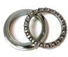
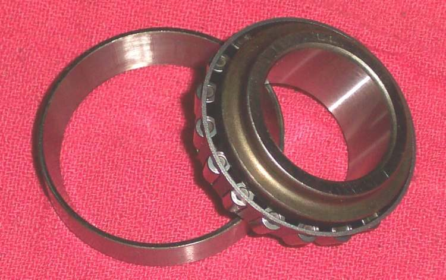

The handlebar shakes quickly from side to side. It may happen when you take your hands off (often when slowing down between about walking pace and town speed), or at a certain speed, or suddenly after a bump. The usual causes are at the front: a worn or wrongly inflated front tyre, loose steering head bearings, worn wheel bearings, a buckled or unbalanced wheel, or twisted forks. A heavy load at the back makes it worse.
Is it safe to ride?
Stop now if the bars shake hard at speed. Hold the bars firmly but not stiffly, close the throttle smoothly, do not brake hard, and stop when the shaking ends. Do not ride again until the cause is found.
Quick checks first
- Check both tyre pressures cold (K-Light 125: front 190 ± 10 kPa, rear 210 ± 10 kPa).
- Look at the front tyre for cupping (scalloped wear), bulges or a flat spot.
- Is there a heavy top box, load or passenger at the back?
- Has the bike been dropped, hit a pothole, or had the front wheel off recently?
Diagnose it step by step
1Are tyre pressures correct and both tyres in good shape?
- No: correct the pressure with Check tyre pressure. A cupped or damaged tyre is replaced: Inspect tyres for wear and damage.
- Yes: go to step 2.
2With the front wheel off the ground, is there play at the steering head when you push and pull the fork legs?
- Yes: Check the steering head bearings, then Adjust or replace steering head bearings. Workshop.
- No: go to step 3.
3Does the front wheel move sideways on the axle, or feel rough?
- Yes: Check wheel bearings. See Wheel moves sideways on the axle.
- No: go to step 4.
4Is the axle nut tight, and are spokes tight (spoked wheels)?
- No: tighten the axle to the model torque (K-Light 125 front: 75 to 88 N·m). Loose spokes: Spokes are loose or broken.
- Yes: go to step 5.
5Spin the wheel: does the rim or tyre wobble side to side or up and down?
- Yes: Check a wheel for runout. See Wheel is buckled or wobbles.
- No: go to step 6.
6Is the shake at one speed only, like a vibration?
- Yes: the wheel may be out of balance. Balance a wheel, and see Vibration at certain speeds.
- No: go to step 7.
7Are the forks straight and equal (same height in clamps, both legs move the same)?
- No: Align the front wheel, forks and handlebar; bent parts need a workshop.
- Yes: check the rear: swingarm play and rear shocks with Check the swingarm pivot. Remove heavy loads from the very back.
Causes, most likely first
| Cause | How to confirm | Fix |
|---|---|---|
| Wrong pressure or worn front tyre | Gauge reading; cupped tread | Check tyre pressure, Inspect tyres for wear and damage |
| Heavy rear load | Shakes only when loaded | Move load forward, reduce weight |
| Loose steering head bearings | Play at head tube | Adjust or replace steering head bearings |
| Worn front wheel bearings | Wheel rocks on axle | Check wheel bearings |
| Buckled or unbalanced wheel | Runout or one-speed vibration | Check a wheel for runout |
| Twisted or bent forks | Legs uneven, bars crooked | Align the front wheel, forks and handlebar |
| Swingarm play | Rear moves sideways | Check the swingarm pivot |
Reference values (K-Light 125)
| Item | Value | Source |
|---|---|---|
| Cold tyre pressure, front / rear | 190 ± 10 kPa / 210 ± 10 kPa | K-Light 125 manual, PDF p. 71 |
| Front axle nut | 75 to 88 N·m | K-Light 125 manual, PDF p. 49 |